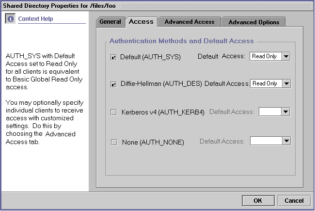
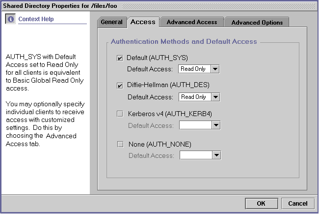
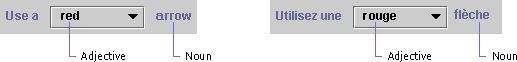
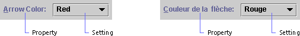
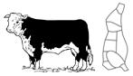
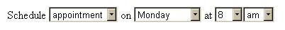
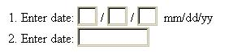
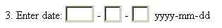

Globalisation in Software Design
Contents
Checklist
- If the feature will be translated for a locale with a
right-to-left
reading order, its layout should be examined by literally looking at
the user interface in the mirror.
-
Word order can change from one language to another. Have I assured that no GUI element embedded within a text string?
- Did the product group looked carefully at the
internationalization of a third party technology it is needed to get a
feature running?
- Are Human figures, body parts, and especially hands avoided at all costs? The only
acceptable human figure is a stick figure with no clothes, no hands
with fingers, and no hair.
- Hands
- don't even try. There's not a hand position around which isn't
offensive somewhere. And there is no hand position with universal
meaning. Really.
- Are graphics avoided which contain words, represent
puns on English words, or doing pictorial representations of English
words?
- Did you make sure that a single icon is not used for multiple meanings?
- Text
chosen for the UI should reflect an international English product.
Avoid jargon, slang, Americanisms, cutesy phraseology, and humor.
Guide Lines
GUI
Layout
When dialogs are translated from English into other languages, the
length of the components containing text can increase more than 30%.
The components that are affected by translation include buttons, menus,
tables, labels, and text fields. If the window is already wide,
expansion can cause it to exceed the width of the screen. The height of
textual components can also increase when they are translated into
Asian languages, since Asian characters can be unreadable at a Latin
height. In the following example, the components on the original
version of a dialog were laid out side-by-side. The dialog would have
become much wider after translation.

This dialog had components side-by-side.
(AdminSuite 3.0 dialog courtesy of Karen Stanley.)

The dialog was redesigned by stacking the components
vertically.
Now, there is space to the right of the components for expanded text.
(AdminSuite 3.0 dialog courtesy of Karen Stanley.)
Dialogs should be designed to resize gracefully when text
expands, so
the localized user interface is attractive and readable. GUI objects
should be cushioned amidst ample horizontal and vertical space. This
way, they can expand into the blank space when translated, hence
reducing the possibility of the entire dialog box growing.
If the total length of a row of GUI objects on a dialog is
longer than
60% of the width of the dialog, or if the total height of a column of
GUI objects is taller than 80% of the dialog, the layout will probably
need to change.
The number of menus on the menu bar should be limited, so that
the bar does not wrap to a second line when translated.
When layout managers are available for the platform, they
should be
used in laying out dialog boxes. This way, when the components are
translated, the whole window can expand automatically if necessary.
Layouts should be tested with a text expansion utility. The
utility
should test horizontal expansion by appending a certain number of extra
characters to textual components. If a resulting expanded text string
is too long for the window, the layout will need to be fixed. The
utility should also test vertical expansion by increasing the height of
all textual components by a specific amount. If the results make the
dialog unreasonably tall, the layout will need to be fixed.
Reading
Order
In English, people read from left to right and from top to bottom. Some
languages have different reading orders, such as Hebrew and Arabic,
where
the reading order is right to left. The following guidelines will make
your GUIs easier to use across locales with varying reading orders.
If the application will be translated into a
language with a right-to-left reading order, the layout of the GUI
objects will need to be reversed. For instance, vertical scrollbars
will need to move from the right to the left of the window, and labels
will need to be placed to the right rather than to the left of their
associated GUI objects. On some systems, this happens automatically;
this automatic shift should be verified. Also, the tab traversal order
should make sense in a right-to-left locale.
If the application will be translated for a locale with a
right-to-left
reading order, its layout should be examined by literally looking at
the user interface in the mirror.
Word
Order
Word order can change from one language to another. A
GUI that embeds a component in a text string, such as in the following
example, will need to be laid out again when translated into French.
This
is because in French, most adjectives come after the noun they describe
instead of before it.

The French translation has an incorrect word order.
(graphic courtesy of the Java Look and Feel Design Guidelines)
To anticipate variations in word order, use a layout like the
following
in the original version of the product.

Now, the GUI object is not embedded within a text string, and
the word order is correct in both French and English.
(graphic courtesy of the Java Look and Feel Design Guidelines)
Interaction
with other products
This is an area, which has not been emphasized in the past,
but is
becoming important to the success of many products. Software products
within a
company can be dependent on each other and on external products. If one
of the pieces is not internationalized properly, it can prevent the
internationalization of the entire ensemble.
Design requirements should address the needs of dependent
products.
If an application server cannot process application data in the
Simplified
Chinese charset EUC-CN, then chances are all the applications running
on the server will not be able to accept EUC-CN data. Core level
products need to be especially sensitive to this. Products such as
directories, user management, Web servers, etc., need to be fully
internationalized with well-defined interfaces and APIs sooner than
higher-level products, such as trading software.
Be especially careful about choosing a
third-party component or product to include functionality.
More often than not, third party products are not internationalized,
and this can block internationalization in the including product. If
the code rights are purchased, then the product group is often saddled
with retrofitting i18n into someone else's code. Worse, sometimes the
design itself is flawed, rendering the product useless to your company.
Any time a third party product is evaluated for use or purchase, the
product group should look very carefully at its internationalization.
International
requirements
Some internationalization does not involve the processing of
international
data at all. Different markets have different requirements; this is
why companies divide their sales areas into separate regions.
Customers in other parts of the world use products for other purposes
than those in the US. They approach products differently, and they
may have requirements that are not included in a US specification. It
is important when gathering requirements for a product that
international customers, sales personnel, and marketers are
consulted.
Some clear examples come from the auto industry. In England,
people
use
their headlights to signal other drivers for various courtesies,
usually letting someone else into traffic or giving someone else
right-of-way. They need a function to flash their headlights even when
they aren't switched on. The controls in a car made for the US
wouldn't work, particularly in cars that have retracting headlights.
The Acura/Honda Integra, which has retracting headlights, has a
switch in England models that lifts up the headlights, flashes them
once, and retracts them again. Another example of international
requirements for cars comes from India. Cars there are required to
emit a noise when reversing, much like trucks and electric cars in
the US. Note that these requirements have nothing to do with the
local language or data; instead they are to facilitate the local way
of conducting business.
Graphical
images
Graphical
images are expensive to create, and are almost as expensive to
modify. English product is usually sold all over the world. Taking
these two premises into account, product graphics should be
universally acceptable if at all possible.
Here
are some basic guidelines for creating universally acceptable
graphics:
Human
figures, body parts, and especially hands should be avoided at all
costs!
The
problem with human figures is manifold: is it female
or male,
what is it wearing, what color is its skin and hair, what position is
the body in, what is the figure doing? Obviously in some cultures,
certain types of dress are inappropriate, whereas they are standard
in other cultures. People of one sex may not be allowed to perform
certain tasks in some cultures, but in others they are the primary
performers of these tasks. In different parts of the world, people
identify with different skin and hair color on the figures. The only
acceptable human figure is a stick figure with no clothes, no hands
with fingers, and no hair.
With
body parts, the difficulty lies not only in which body part is being
represented, but what
position
it is in, where it is cut off, and how it is cut off.
Hands
- don't even try. There's not a hand position around which isn't
offensive somewhere. And there is no hand position with universal
meaning. Really. Don't forget.
No
animals should be used to represent anything other than the actual
animal.
Consider
this graphic:

OK
for the USA, maybe, but not ideal for India!
And
this one:
Is
this a pet? Is it a farm animal? Is it food? Depends on where you
are.
Animals
are powerful symbols in many cultures, and there is no universal
animal symbol template. Bottom line; don't use them unless you're
representing the actual animal.
Puns
on English words, pictorial representations of English words, and
graphics containing words are not universal.
Representing
an English word with a picture of something that shares the same word
but has a different meaning does not translate. For example, in one
product there was an icon for representing staging. The icon was a
picture of a theater stage. While this works in English, it doesn't
work in other languages.
Is
this a home? How about this?
Is
either one of them related to a home page on the Web?
Another
more common example is using a picture of a musical note to represent
a message note. Again, this makes no sense to people who do not speak
English.
Text
in graphics can be a real nightmare. If the product is to be
localized, then the graphics have to be altered at great expense.
Simply use some sort of image, and keep the text separate. Use
numeric callouts and place the descriptions in text above or below
the graphic. If there is no way around putting the text in the
graphic, follow all these guidelines:
-
Make
sure there is plenty of expansion room for the text portion of the
graphic. Translations into alphabetic languages can more than double
in width, and ideographic languages tend to expand vertically.
-
Allow
the font size to change. If a small font is needed in order to make
the text fit, then the graphic needs to be redesigned, since it will
not be translatable.
-
Separate
the text from the graphic in layers, at least for sourcing purposes.
Save the graphic without text as a sort of blank, and provide that
to the localization team.
Some
objects are culture-specific, so verify that a particular object used
in a graphic is universally understood.
Take
a look at this graphic:
What
is it? Where is it used? Who has one that looks like this? The red
flag is up - what does that mean? In real life? Online?
The
answers are that this is a US rural mailbox. People who have this
sort of mailbox do not need to mail their outgoing letters in an
official post box. Instead, the postal carrier will pick up outgoing
mail for them, as well as delivering the incoming mail. If someone
has outgoing mail, they raise the red flag. The postal carrier will
lower it after picking up the outgoing letters. But online, the
raised red flag is used to indicate that there is newly delivered
mail in the mailbox. So not only has a location-specific symbol been
used, but also it has been used incorrectly.
This
is a perfect example of an assumption that everyone in the world
would understand that a picture of a US rural/suburban mailbox is a
mailbox. The difficulty is finding a single object that would
universally illustrate a mailbox. In this case, the shape of the
mailbox cannot be meaningful - mailboxes around the world come in all
shapes and sizes. Instead focus on the purpose of the mailbox, as a
place to receive mail. Make the box simple, and put an obvious letter
or stack of letters in it. A basic letter image is universally
understood, so work from there.
Some
objects would be found offensive to certain cultures - take this
graphic for example:
While
in some cultures alcohol indicates a celebration, in others it is
against religious beliefs to consume alcohol. People from the
cultures prohibiting alcohol might view the above image as sinful or
degenerate, not usually the impression that products mean to portray.
It's best to find another type of image to portray the meaning
(unless the product is, in fact, wine!)
Make
sure that a single icon is not used for multiple meanings.
While
this sounds like an obvious statement, it is violated all the time.
The most common example is this: .
In a single product, it is used to indicate a link to help
information, and a query that requires a response. In fact, it's
been known to occur in a style guide with those two meanings. And
while the context makes the icon understood, needing a context to
understand the icon defeats the purpose of using an icon at all.
Color
Color
means different things in different cultures. What does putting
this text in red mean? Does it mean, "this statement is
especially important"? Does it mean that the statement is
meant as a
caution or warning? Is it just calling out the statement as being
special? Maybe it signifies that the statement is especially positive
and good? The answer is, depends on the person reading it.
In some countries, red is a celebratory color, conveying a
positive
meaning. In Korea, if a person's name appears in red, it means they
are deceased. White is usually associated with goodness and purity in
US culture, but elsewhere means death. In addition, the distinctions
between colors varies with the culture; the line between what is blue
and what is green changes quite a bit between the US and Japan.
This
is not to say that colors are not useful; they are. But remember that
color alone cannot convey meaning; this is not just for i18n, but
also for accessibility, since colorblind people will not be able to
see the distinctions. It is best to use a consistent color scheme
throughout a product, or better yet, throughout a line of products.
Users will grow accustomed to the color scheme, e.g. red
for errors, yellow
for warnings,
green for success.
Text
Text
chosen for the UI should reflect an international English product.
Avoid jargon, slang, Americanisms, cutesy phraseology, and humor.
Humor does not translate well. Truly. Ha ha. Get it?
Samples
and scenarios should be chosen carefully. For example, one product
used a spy as a character in the tutorial, and Swedish customers
found this very offensive. The best approach would be to talk to
people from different cultures. Take advantage of the diversity of
people in the office, as well as the field marketing and sales
people.
Sound
Some
sounds are culture specific. While the game show buzzer sound for
incorrect answers is well known to people in the US, it is simply an
unpleasant cacophonous noise with no meaning to those in other
countries. In Japan, making a mistake on your computer can be
personally embarrassing; broadcasting that mistake to your coworkers
via a buzz or beep may cause shame. This does not boost product
sales.
The
best approach to including non-speech sounds is probably to make a
variety of sounds and allow the user to select. There should always
be an option to turn sound off. All sounds should be localizable+
Video
Video is often used for product demonstrations and marketing purposes.
Since it is expensive to localize video, the voiceover is often the
only part that changes for each geographic market. Different cultures
have different ideas of what is appropriate as far as movement, degree
of eye contact, and clothing are concerned. The non-textual aspects of
internationalization that apply to graphical user interfaces are
present and even intensified in video format. Also, video formats can
differ from one country to another.
A marketing professional with experience marketing products
internationally should be engaged to review the video before it is
released outside of the United States.
.
Layout
Layout
design must accommodate not only the fixed elements on the screen,
but also the variable ones.
Fixed
elements
For
localizability, fixed elements must be arranged such that text can
expand without requiring a great deal of rework. Alphabetic (e.g.
Latin, Cyrillic, Hebrew) languages tend to expand horizontally,
sometimes more than double the size of the English text. Chinese
character based (e.g. Japanese, Chinese, and in this case, Korean)
languages often expand vertically, since the characters are taller
than Latin characters. Font sizes may need to be larger for other
character sets. Allow for text expansion in all UI elements,
including:
- field labels
- field separators
- titles
- user/error message areas
- buttons
- checkboxes
- radio buttons
- drop down lists
- table cells
- text in images*
*of
course, there should be little to no text in images...
All
elements must be not only translatable, but expandable and movable as
well. It's not always possible to create a button length that makes
visual sense in all languages. Consider for example the English word
edit, which when translated into German becomes bearbeiten.
For some screens, having a button large enough to accommodate
bearbeiten would not work well for edit.
Bear in mind,
too, that other languages do not abbreviate as extensively as
English, so abbreviation is not always a workaround. Some input
method editors add an additional status line to the bottom of a
window, so keep this in mind when choosing a window size.
The
order of elements may need to change, especially in sorted lists. If
the product has a list of radio button choices in alphabetical order,
that order will likely change in a translated version. The tab order
should also change to match the visual order.
Order
should be a consideration in the UI design. If it's not necessary,
it's easier to avoid forcing a particular order. One of the more
difficult designs is indexing by letter of the alphabet. This is
quite a common design, but for products being localized, it is not
always easy to translate into non-alphabetic languages. If it
appears after examining other possibilities that the index-by-letter
design truly makes the most sense, check with the localization team
before forging ahead with the design implementation.
Sentence
order will change with different languages; so do not include a
particular sentence order as part of the design. Not only does the
order change, but the phrase breaks change as well, so simply
allowing reordering may not be enough for a translation to look
correct. For example, it's tempting to construct a calendar entry
edit screen to have:

However,
most languages would have to rearrange the fields, and some (in this
case, the am/pm) are superfluous and need to be removed.
Keyboard
shortcuts may also need to be manipulatable. If the reason for choosing
a particular keyboard sequence is due to the keys' close proximity,
then this may need to change for different keyboard layouts. For
shortcuts using a mnemonic letter, these will change with
translations.
Variable
elements or user input fields
Fixed
elements are not the only portions of the UI that change order or
expand with use in other languages. User input areas also need more
space for the data they input. The key difference here is that making
the elements flexible for localization is not enough! English
product is often sold all over the world, and the UI included with
English product must accommodate input data from all over the world.
The
most obvious design area is to make sure input areas are large enough
to handle longer input text. This is a fairly straightforward
requirement. Consider the Turkish Lira example, currently over
TRL 1,500,000 to USD 1.00 - imagine the expansion
needed in
a currency field.
Another
expansion consideration is the rendering of input text - the text
area needs to be not only long enough for more and/or longer words,
but also tall enough for larger fonts.
More
complex than expansion is the consideration of universal data input
field structure. For example, if a product allows the user to enter a
date in a short format, how should the input area look?

The
problem with forcing a date format is that it isn't universal. Even
dates themselves aren't universal, although it isn't unusual for
products to limit their capacity to the Gregorian calendar. But the
mm/dd/yy format so common in the US is not used anywhere else, and is
very confusing. It is better to allow a user in a known locale to
enter a date format commonly used in that locale. If there is no way
to know the locale, then the only acceptable universal date format is
yyyy-mm-dd. The separator may be changed to a dot, or possibly a
slash / but the rest of the fields must be in the specified order. So
the date input field might look like:

Another
possible solution to the format issue is to provide users with a
choice of formats, for example in a preferences area. This way you
can display the chosen format next to the field, and know exactly how
to parse the input date format from the user.
Of
course, there is the story of the Japanese emperor date. One product
allowed for modification of the emperor name in the date field,
trying to make the product as flexible as possible. The Japanese were
offended, because that implied that the emperor would die. The moral
of this story: universal design is a tricky business.
Other
field types that should be considered very carefully are names,
addresses, company information, currency, measurement, numeric
values, and any other formatted data. Data formats are usually locale
and/or culture specific. Once again, English product is sold all over
the world, so just making the arrangement localizable is not enough.
If the interface must be customized in order for the product to
function properly, then create several locale profiles that can be
loaded based on the user's locale. Or, less optimally, make it easily
user customizable, and inform the customer that they are expected to
customize the product for the locale.
One
more very important consideration in layout design is orientation.
Consider what will happen in your interface layout for a
right-to-left language. If there are controls, they may need to
switch sides. Titles, tables, table cells, and similar elements will
need to be right aligned. Text on one side of an image will need to
move to the other side. Some of these changes may need to be dynamic,
basing the orientation of the layout on the locale or data language.
One trick to help visualize what a design might look like in a
right-to-left layout is to view that design in a mirror. Orientation
is often so imbedded in a design that suddenly having to accommodate
a right-to-left language requires a major code revision. Thinking
about it ahead of time will allow you to serve more customers with
less effort.
Command
Line Interface (CLI)
The
definition of CLI used here is something that a user can type on a
shell command line.
-
The
command itself is not usually localizable, nor are fixed parameters.
-
The
data provided as arguments to commands and parameters may be in
another charset, locale format, or other localized structure. Be
prepared for all argument data.
-
Output
of the command must be localizable. For example, even fixed data
from the UNIX ps
command has column headings. Output text needs to be transformed
(converted) into the native charset of the command window.
Fortunately, this does not usually apply to batch commands.
If
the command parses output from another command, be aware that this
output may be localized. Don't rely on English string literals which
are not fixed names. Or force the locale to be en_US or C for the
execution of that command, for example:
>
env LC_ALL=fr date
vendredi,
6 octobre 2000, 18:24:02 PDT
>
env LC_ALL=de date
Freitag,
6. Oktober 2000, 18:26:24 Uhr PDT
>
env LC_ALL=it date
venerd?,
6 ottobre 2000, 18:27:23 PDT
Note:
This locale change only works for the command that follows it. The
system and shell environment variables remain unchanged.I18n in Software Design,
Architecture and Implementation
|